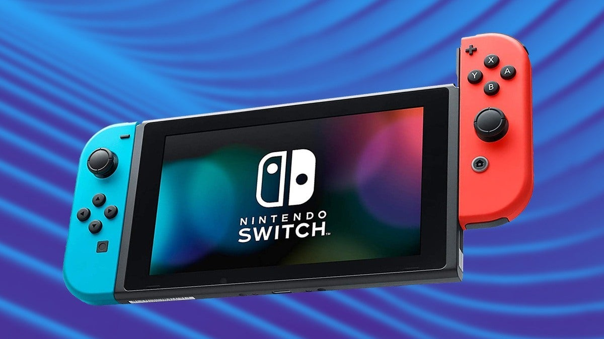
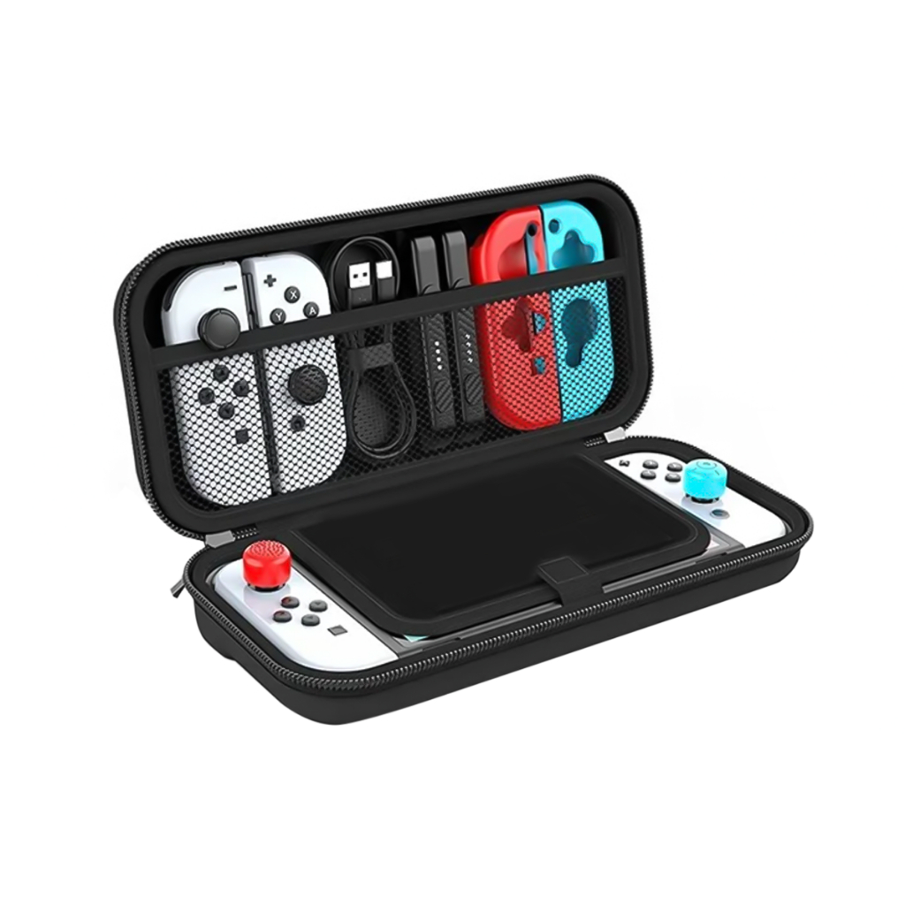
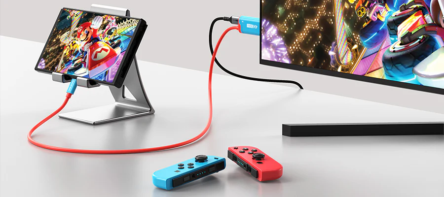
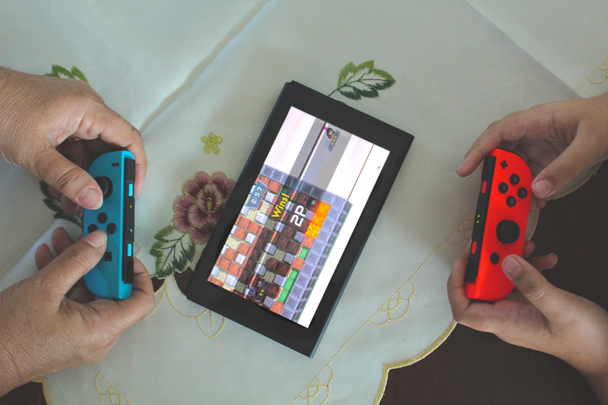

O Nintendo Switch é um console desenvolvido pela Nintendo que combina modo portátil e console de mesa em um único dispositivo. Seu principal diferencial é a liberdade de jogar em qualquer lugar, sozinho ou com amigos, utilizando os controles Joy-Con destacáveis.

No modo portátil, o console funciona como um videogame de mão, permitindo jogar em qualquer lugar com praticidade e conforto. Sua tela integrada e os controles acoplados tornam a experiência ideal para viagens, passeios ou momentos longe da televisão.

No modo TV, o Nintendo Switch pode ser conectado à televisão através da base (dock), proporcionando uma experiência mais imersiva, com tela grande e maior conforto para jogar em casa. Esse modo é perfeito para aproveitar gráficos mais amplos e jogar com amigos ou família.

O console também se destaca pelo multiplayer, já que os controles Joy-Con podem ser compartilhados entre duas pessoas rapidamente. Assim, é possível jogar partidas locais de forma simples e divertida, incentivando a interação e tornando os jogos ainda mais dinâmicos.